ApexSim runs a 240 Hz authoritative physics simulation in Rust and renders it in Unreal Engine 5. Fourteen cars, twenty-seven real circuits, and no second physics model to argue with. Cars, circuits and the HUD are files you can open.
Every system that matters to how a car drives lives on the server, computed from the tyres outward. The client's job is to render it faithfully and get out of the way.
01 / PHYSICS
A four-wheel model that earns its grip
Per-wheel loads, Pacejka-style tyres, suspension and a drivetrain with real gear ratios, driving on the same road mesh the client draws: a kerb is five centimetres tall in the physics too. Downforce follows ride height and rake, a tow saves drag and dirty air takes the front wing away. Deterministic to the bit, guarded by a test that asserts identical runs.
Pacejka tyres
Ride-height aero
Slipstream
Road mesh
Deterministic
02 / NETCODE
One simulation, clocked in server ticks
TCP+TLS for the lobby, UDP for telemetry and input, bound by a token handshake. Cars are rendered from a telemetry buffer interpolated between samples and dead-reckoned across gaps, so motion stays smooth without a second model to reconcile.
Protocol v2
MessagePack
Telemetry at 60 Hz
Prometheus metrics
03 / TYRES AND FUEL
A car that changes over a stint
Each tyre is a tread and a core with their own temperatures. Pressure follows the gas law, grip follows the working window, and wear ends in a cliff. Soft, medium and hard compounds. Fuel is burned by the power the engine makes, and its weight moves the balance as the tank drains.
04 / HEAT
Carbon wants heat, steel fades
Each brake disc is a thermal mass, heated by what the pads absorb and cooled through a duct you can resize in the garage. Carbon is weak when cold; steel fades past 700 °C. The radiator runs hot in a long tow, and an engine that overheats gives up power.
05 / DAMAGE
Every hit counts, and shows
Contact is scored by closing speed across five zones. A bent nose loses downforce and radiator flow, a damaged flank pulls the steering, a hurt engine loses power, and a zone at 100% ends the race. You can see it on the car: panels dent and scuff, wings and noses come off, and a hurt engine trails smoke. The host picks full, reduced or no damage.
06 / STRATEGY
Pit stops, DRS and deployment
A working pit lane: a speed limiter, a box per car, and a crew that changes tyres, refuels and repairs. DRS arms within a second of the car ahead. Hybrids have harvest, balanced and attack modes, a lap budget and an overtake button. The AI plans its own stops.
07 / CIRCUITS
Real ground, real furniture
Measured centerlines with per-side width and banking, and terrain from the Copernicus GLO-30 elevation model out to an eight kilometre horizon. Stands, pit lanes, barriers and woodland are laid from OpenStreetMap dossiers on 23 of the 27 circuits.
08 / FORCE FEEDBACK
Feel the front let go
Steering-column torque summed from each front tyre's aligning moment, scrub and jacking: the rim goes light as the grip peaks. Kerbs, lock-ups and the road's own texture come through it. DirectInput wheels, pedals and button boxes, with the steering lock matched to each car.
09 / AUDIO
Engines that are simulated, not sampled
A crank turned at live RPM fires each cylinder into exhaust banks, headers and a silencer. Crossplane burble, overrun pops, gear whine, and tyres that howl only past their grip peak. Zero audio files.
10 / WEATHER
Rain, wind and thin air
Five weather states, any time of day, a host-picked air temperature and wind that gusts. Wet grip, air density and altitude are baked into the session, so physics, AI and the racing line all follow: at 2,240 m a turbo keeps its power and a wing does not. Floodlights and headlights come on after dark.
11 / HOTLAP
Garage, ghost, repeat
Time attack with sector splits, track limits and records that persist. Chase your best lap's ghost, replay it from the TV cameras, then work through 25 setup knobs shown in real units: psi, N/mm, millimetres of ride height.
12 / RACECRAFT
AI and a TV director
Deterministic AI drivers race in your car's class with a traffic layer, and drive to the grip they have: cold tyres, dirty air, a tailwind into a braking zone, a damaged wing. Behind the menus a broadcast director follows the battles through trackside, helicopter and onboard shots, in a race that rolls its own weather.
Class fields
Pit strategy
Broadcast cameras
Live menu backdrop
13 / MODDING
Open the files
A car is a car.toml and a GLB. A circuit is an export the game builds as it loads. The HUD is 17 JSON components with an in-game layout editor. Nothing is cooked, so a change is a file save and a rescan. Tracks and cars from your own Assetto Corsa install import with one command, and stay on your machine.
car.toml
Runtime tracks
JSON HUD
AC importers
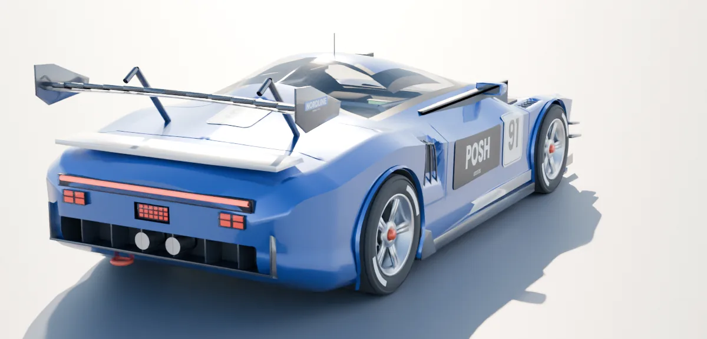
Posh GT3 RS · GT3
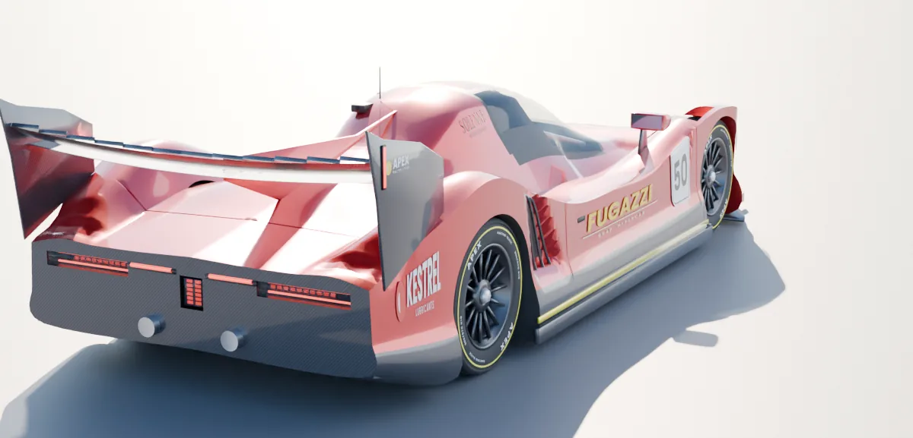
Fugazzi 994P · Hypercar
The grid
14 cars. Four classes.
Every car is a physics definition and a 3D model, read from the same files by the server and the client. The AI fills the field from your car's own class.
Paint shop
Six liveries a car
Liveries repaint paint, accent and logo at runtime on the race car and in the garage turntable. Pick yours in the lobby; the AI is dealt the rest in turn, so a full field never looks cloned.
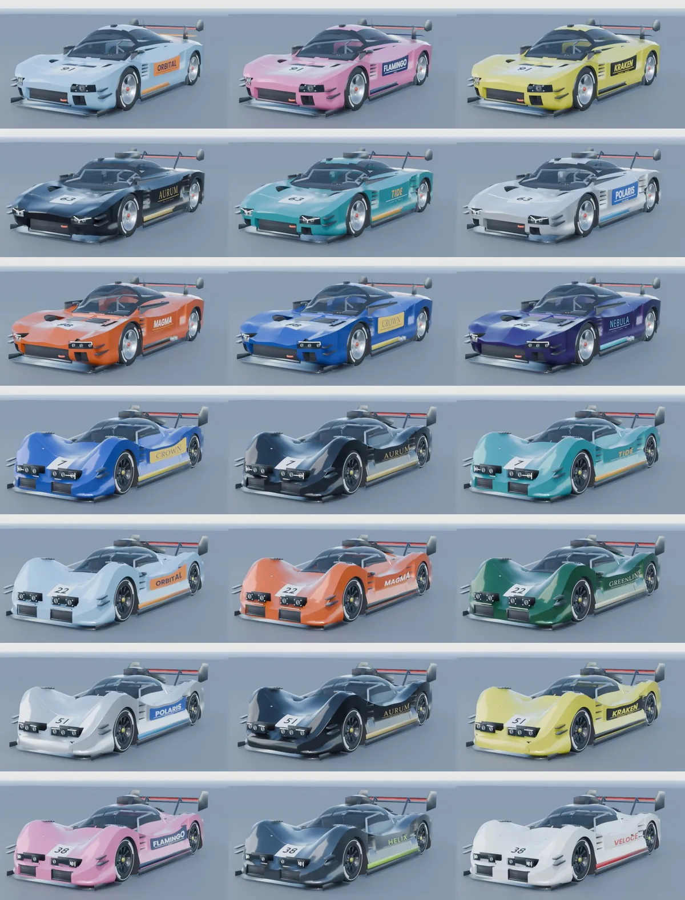
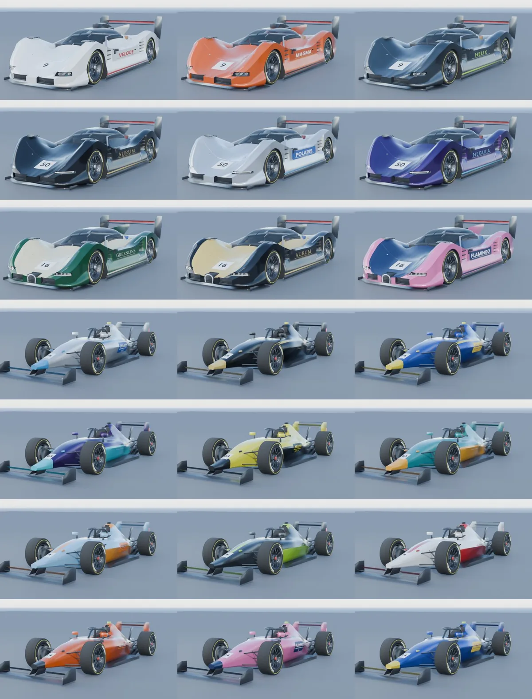
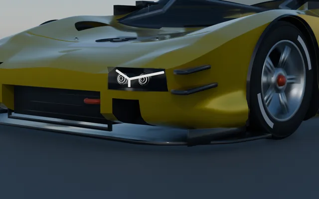
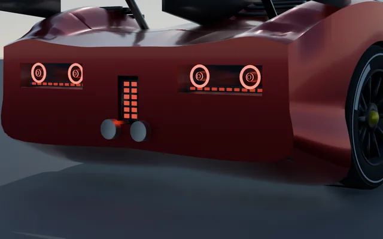
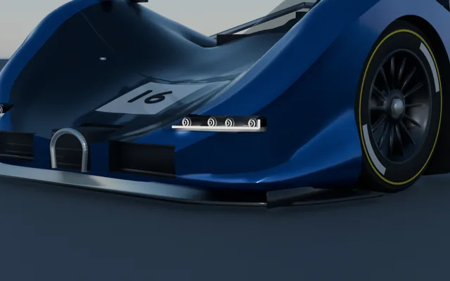
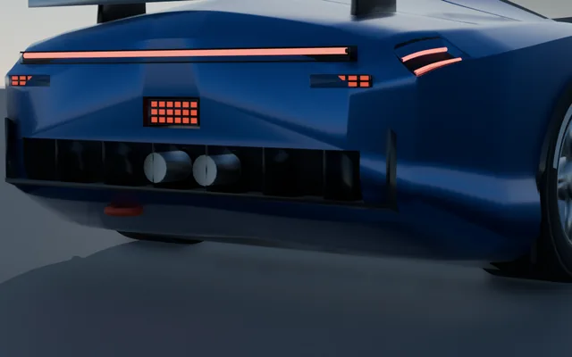
The calendar
27 circuits. Surveyed, not sketched.
Centerlines from public GPS traces, smoothed without shrinking the circuit, in 20 countries. The longest is the 20.8 km Nürburger Mordschleife, routed over OpenStreetMap: 292 m of relief, guard rail close to the road, the forest right behind it and the fans' graffiti on the asphalt. Banking is laid onto the bends it belongs to, and elevation comes from satellite surface models.
Length
Elevation Δ
Since
● green = real layout dossier (named corners, stands, pit lane, woodland from OpenStreetMap). Maps drawn from each circuit's own centerline data.
Unreal Engine 5
In the engine
Every picture here is the game. The action is from seeded AI races that nobody drove, played back and filmed by the game's own broadcast cameras; the screens are what a player sees.
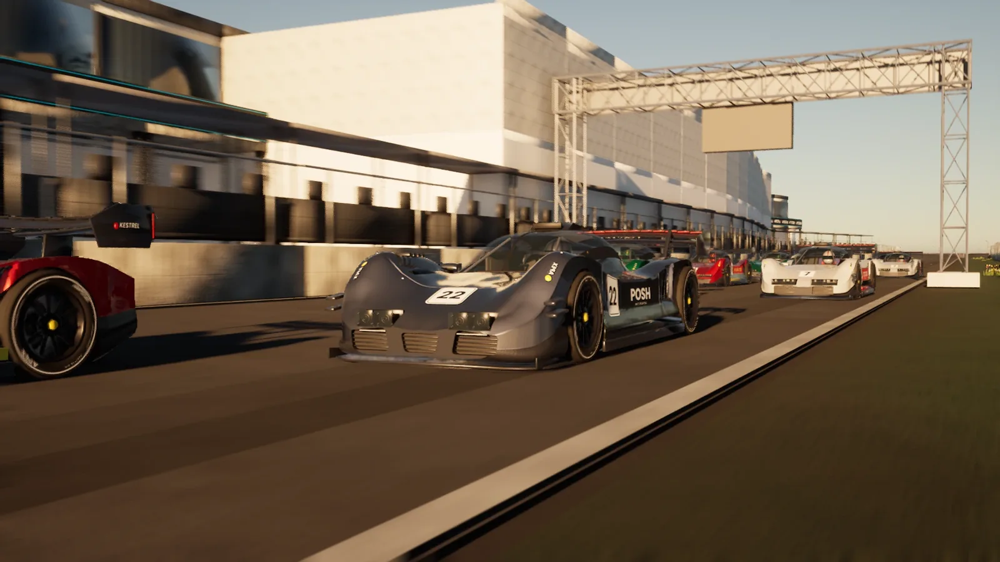
Zandervoort · the grid at golden hour
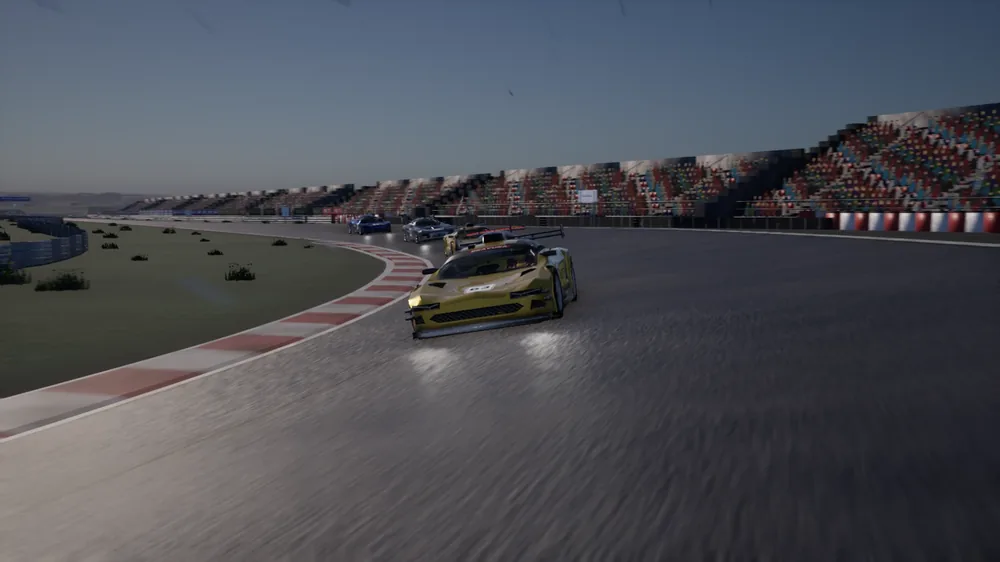
Autodromo Monzarella · heavy rain
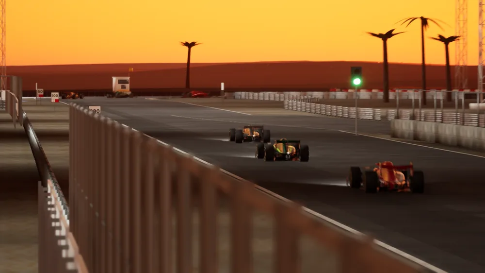
Bahrainless International Circuit · sunset
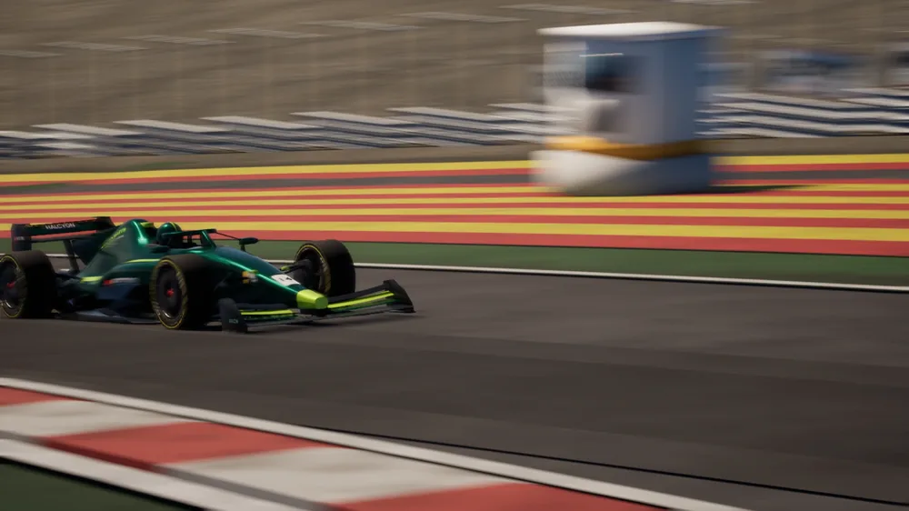
Spa-Frankenchamps · Raidillon
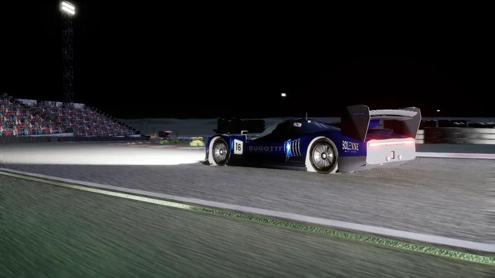
Lemons – Circuit du Peuple · after dark
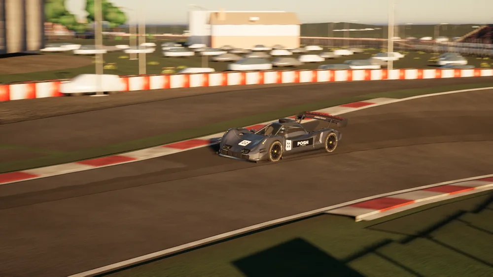
Zandervoort · the banked hairpin
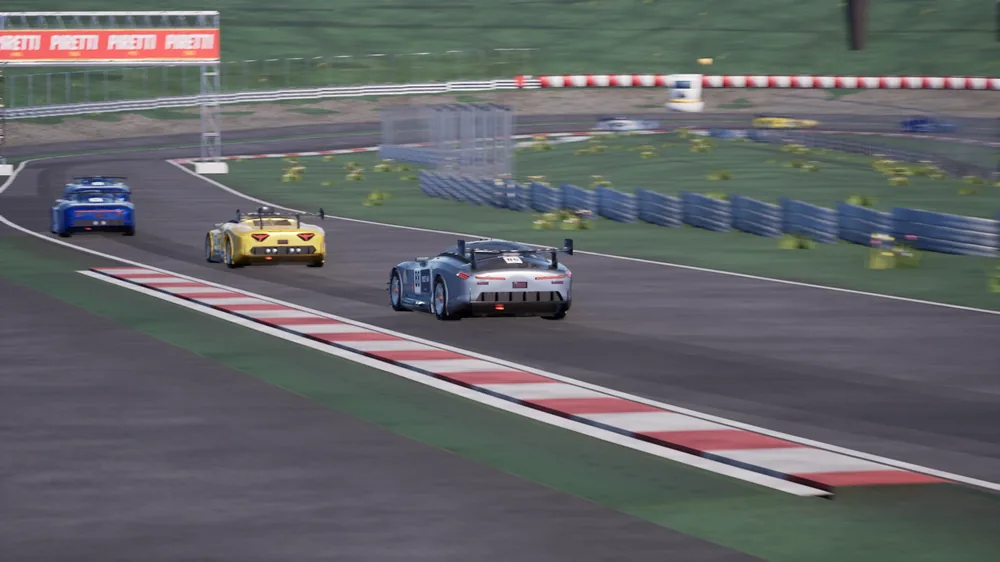
Brands Scratch · Paddock Hill
What the player sees
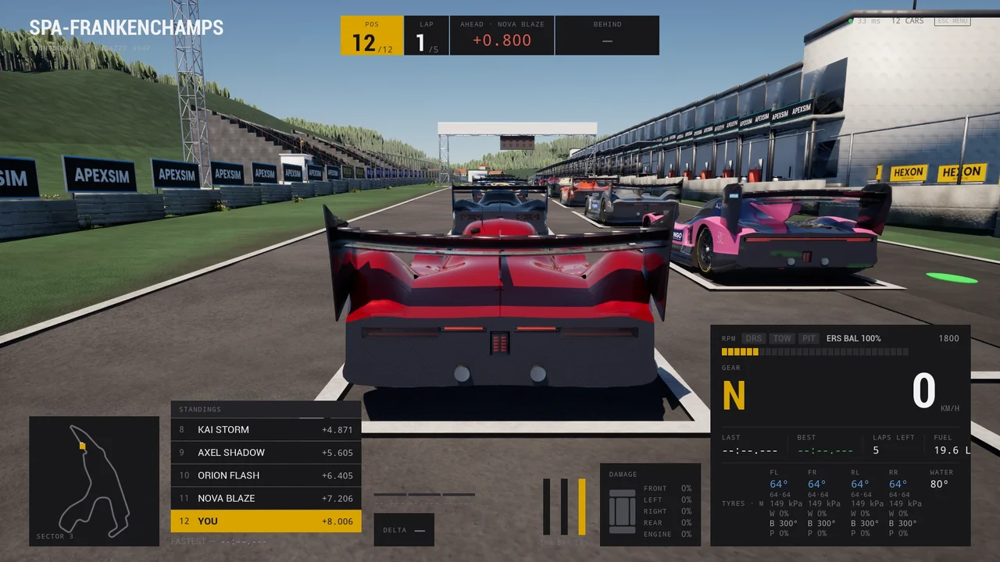
Race view · a HUD of 17 moddable components
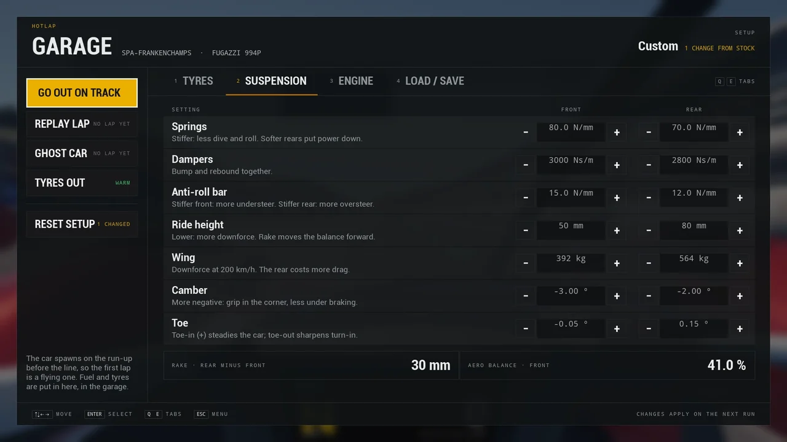
Hotlap garage · 25 setup knobs in real units
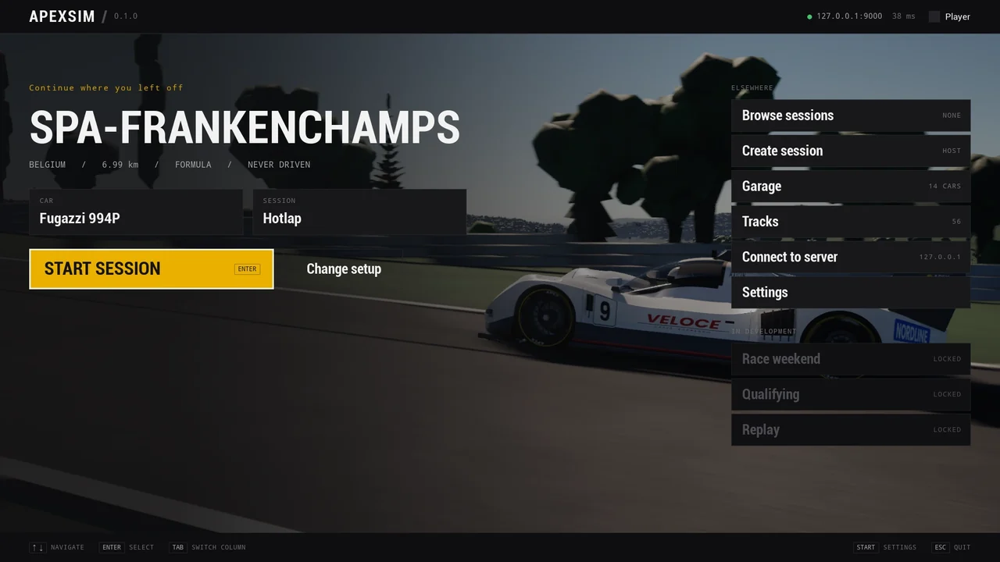
Main menu · over a live demo race
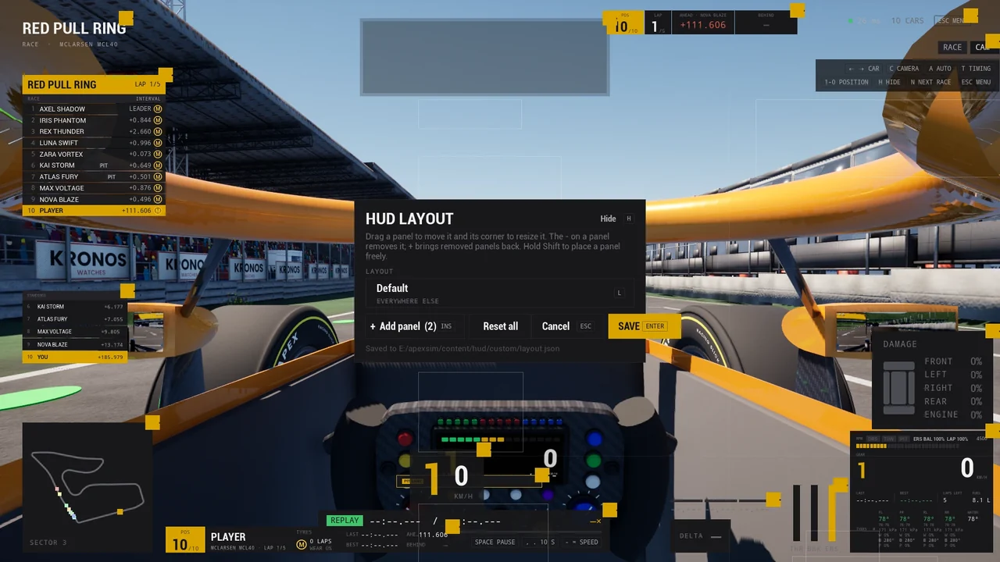
HUD layout editor · move, resize and hide panels in game
Architecture
Three parts, one truth
Simulation logic stays isolated from presentation, so each piece can evolve on its own. The circuit you race is the circuit the server simulates, checked by CRC on both sides.
server/ · Rust
Authoritative server
240 Hz tokio loop. Physics, OBB collision against cars and baked barriers, tyres, fuel, heat and damage, race control and pit stops, AI, force feedback, lap timing and records. /health/metrics
UDP 60 Hz
game-unreal/ · C++
Unreal client
Tracks and cars built at runtime from their files, menus as C++ widget trees, a HUD from JSON, a cockpit built per car, dents and debris drawn from the server's damage figures, TV director, synthesized audio, DirectInput wheels. Every car a telemetry puppet.
exports & sidecars
track-editor/ · Rust
Track pipeline
ats-dress, ats-groom and ats-export turn a centerline and a dossier into the export the game builds, and the road mesh, walls, kerbs and pit lane the server drives on. A Bevy editor sits on top.
Collision that means it
Every armco, tyre wall, stand and building is baked into a walls sidecar. Nothing off the road is decorative.
A road with height
The server drives on the rendered road as triangles: kerbs you can feel, run-off that is tarmac, and two levels where a circuit crosses itself.
Track limits
Four wheels past the kerb band for 0.2 s strikes the lap. Cut the course and it's gone too.
Racing line
A quasi-steady-state speed profile per car from its grip, downforce, power and brakes.
Assists, host-controlled
ABS, traction control, auto gearbox, steering assist, damage level. The session host decides what's allowed; the server enforces it.
Cockpit
Wheel, dash and scene-captured mirrors built per car. Seat, horizon lock and head motion are yours to set.
Records and ghosts
Your best legal lap per car and circuit survives restarts, with a trace of the lap that set it to race against.
Checked content
Each car and circuit carries a checksum of its source file. A client racing on different data than the server is told so.
Replays nobody drove
A seeded AI race replays bit for bit. The trailer was cut from headless races, filmed afterwards by the game's own cameras.
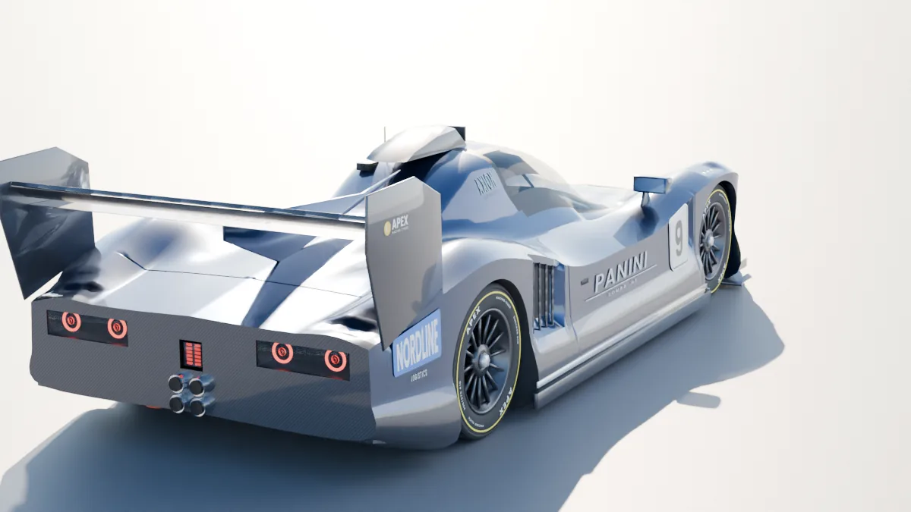
In active development
Get on the grid
The simulation and the networking underneath it are solid. Presentation and gameplay are filling in fast. Build it, run a server, and go racing.
# once, on a fresh clone: generate the content
./scripts/initialize_content.ps1
# build, start a local server and play (Windows)
./scripts/play_editor.ps1 -Build